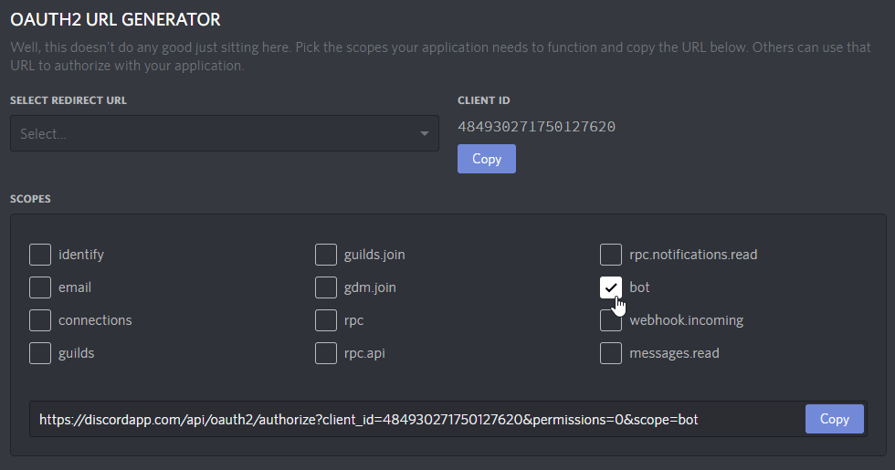

Making Your First Bot with Discord.Net
One of the ways to get started with the Discord API is to write a basic ping-pong bot. This bot will respond to a simple command "ping." We will expand on this to create more diverse commands later, but for now, it is a good starting point.
Creating a Discord Bot
Before writing your bot, it is necessary to create a bot account via the Discord Applications Portal first.
- Visit the Discord Applications Portal.
- Create a new application.
- Give the application a name (this will be the bot's initial username).
On the left-hand side, under
Settings, clickBot.
Click on
Add Bot.
Confirm the popup.
(Optional) If this bot will be public, tick
Public Bot.
Adding your bot to a server
Bots cannot use invite links; they must be explicitly invited through the OAuth2 flow.
- Open your bot's application on the Discord Applications Portal.
On the left-hand side, under
Settings, clickOAuth2.
Scroll down to
OAuth2 URL Generatorand underScopestickbot.
Scroll down further to
Bot Permissionsand select the permissions that you wish to assign your bot with.Note
This will assign the bot with a special "managed" role that no one else can use. The permissions can be changed later in the roles settings if you ever change your mind!
Open the generated authorization URL in your browser.
- Select a server.
Click on Authorize.
Note
Only servers where you have the
MANAGE_SERVERpermission will be present in this list.
Connecting to Discord
If you have not already created a project and installed Discord.Net, do that now.
For more information, see Installing Discord.Net.
Async
Discord.Net uses .NET's Task-based Asynchronous Pattern (TAP) extensively - nearly every operation is asynchronous. It is highly recommended for these operations to be awaited in a properly established async context whenever possible.
To establish an async context, we will be creating an async main method in your console application, and rewriting the static main method to invoke the new async main.
public class Program
{
public static void Main(string[] args)
=> new Program().MainAsync().GetAwaiter().GetResult();
public async Task MainAsync()
{
}
}
As a result of this, your program will now start and immediately jump into an async context. This allows us to create a connection to Discord later on without having to worry about setting up the correct async implementation.
Warning
If your application throws any exceptions within an async context,
they will be thrown all the way back up to the first non-async method;
since our first non-async method is the program's Main method, this
means that all unhandled exceptions will be thrown up there, which
will crash your application.
Discord.Net will prevent exceptions in event handlers from crashing your program, but any exceptions in your async main will cause the application to crash.
Creating a logging method
Before we create and configure a Discord client, we will add a method to handle Discord.Net's log events.
To allow agnostic support of as many log providers as possible, we
log information through a Log event with a proprietary LogMessage
parameter. See the API Documentation for this event.
If you are using your own logging framework, this is where you would invoke it. For the sake of simplicity, we will only be logging to the console.
You may learn more about this concept in Logging Events/Data.
private Task Log(LogMessage msg)
{
Console.WriteLine(msg.ToString());
return Task.CompletedTask;
}
Creating a Discord Client
Finally, we can create a new connection to Discord.
Since we are writing a bot, we will be using a DiscordSocketClient along with socket entities. See Terminology if you are unsure of the differences. To establish a new connection, we will create an instance of DiscordSocketClient in the new async main. You may pass in an optional @Discord.WebSocket.DiscordSocketConfig if necessary. For most users, the default will work fine.
Before connecting, we should hook the client's Log event to the
log handler that we had just created. Events in Discord.Net work
similarly to any other events in C#.
Next, you will need to "log in to Discord" with the LoginAsync method with the application's "token."

Note
Pay attention to what you are copying from the developer portal! A token is not the same as the application's "client secret."
We may now invoke the client's StartAsync method, which will start connection/reconnection logic. It is important to note that this method will return as soon as connection logic has been started! Any methods that rely on the client's state should go in an event handler. This means that you should not directly be interacting with the client before it is fully ready.
Finally, we will want to block the async main method from returning when running the application. To do this, we can await an infinite delay or any other blocking method, such as reading from the console.
Important
Your bot's token can be used to gain total access to your bot, so do not share this token with anyone else! You should store this token in an external source if you plan on distributing the source code for your bot.
In the following example, we retrieve the token from a pre-defined variable, which is NOT secure, especially if you plan on distributing the application in any shape or form.
We recommend alternative storage such as Environment Variables, an external configuration file, or a secrets manager for safe-handling of secrets.
The following lines can now be added:
private DiscordSocketClient _client;
public async Task MainAsync()
{
_client = new DiscordSocketClient();
_client.Log += Log;
// You can assign your bot token to a string, and pass that in to connect.
// This is, however, insecure, particularly if you plan to have your code hosted in a public repository.
var token = "token";
// Some alternative options would be to keep your token in an Environment Variable or a standalone file.
// var token = Environment.GetEnvironmentVariable("NameOfYourEnvironmentVariable");
// var token = File.ReadAllText("token.txt");
// var token = JsonConvert.DeserializeObject<AConfigurationClass>(File.ReadAllText("config.json")).Token;
await _client.LoginAsync(TokenType.Bot, token);
await _client.StartAsync();
// Block this task until the program is closed.
await Task.Delay(-1);
}
At this point, feel free to start your program and see your bot come online in Discord.
Warning
Getting a warning about A supplied token was invalid. and/or
having trouble logging in? Double-check whether you have put in
the correct credentials and make sure that it is not a client
secret, which is different from a token.
Warning
Encountering a PlatformNotSupportedException when starting your bot?
This means that you are targeting a platform where .NET's default
WebSocket client is not supported. Refer to the installation guide
for how to fix this.
Note
For your reference, you may view the completed program.
Building a bot with commands
To create commands for your bot, you may choose from a variety of command processors available. Throughout the guides, we will be using the one that Discord.Net ships with. Introduction to Command Service will guide you through how to setup a program that is ready for CommandService.
For reference, view an annotated example of this structure.
It is important to know that the recommended design pattern of bots should be to separate...
- the program (initialization and command handler)
- the modules (handle commands)
- the services (persistent storage, pure functions, data manipulation)
This page was last modified at 9/4/2020 6:56:05 PM +02:00 (UTC).
Author: Bram
Commit: df8a0f7cd658d99f04964051ae81bfa0797c4447
Fix: Not using the new domain name. (#1571)
* Fix: Using the correct discord domain.
* Fix: Using the correct discord domain.
* Docs: Using the correct discord domain.
* Fix: Changed canary and ptb to the new domain.